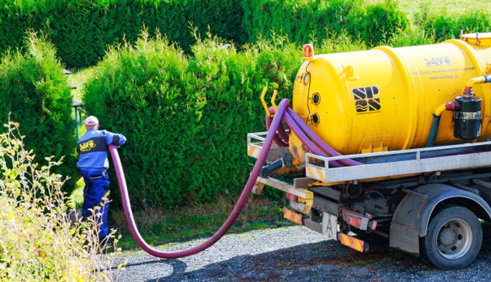

Event Planning
Porta Potty Guide for Tempe Town Lake Festivals
Hosting an event near the water? Learn exactly how many portable restrooms you need to keep guests happy in the Arizona heat.
No forms. No callbacks. Talk to a real dispatcher right now and lock in delivery.
Not sure how many units? Use our free porta potty calculator.
From routine Tempe County construction porta potties to luxury restroom trailers for Downtown Tempe weddings and neighborhood events in Tempe, FixPilot brings the full spectrum of portable sanitation to your door. No job too small, no event too big — same-day delivery throughout Tempe County and beyond.

OSHA-certified portable restrooms for Downtown Tempe and North Tempe construction in Tempe County. Worker-to-toilet ratio documentation included with every Tempe order. Weekly servicing on your Tempe County job site schedule.

VIP trailers with A/C, granite countertops, and LED lighting for Tempe events near Tempe Convention Center. Available with same-day delivery throughout Tempe County and North Tempe venues.

Budget-friendly Tempe standard units delivered same-day to Downtown Tempe and North Tempe in Tempe County. Weekly service and OSHA compliance documentation included for all Tempe orders.

Wheelchair-accessible units for Tempe County construction and Tempe public gatherings. Extra turning radius, grab bars, and accessible seat height — ANSI A117.1 compliant for North Tempe events.

Fresh-water portable sinks for Tempe County outdoor markets, Tempe catering events, and South Tempe job sites. Self-contained, no hookup required — bundle with porta potties for Tempe.

Premium flushable units for Tempe County outdoor events: real flushing action, fresh water, mirror, interior lighting. Popular for Tempe events in South Tempe and near Tempe Fairgrounds where standard units fall short.

Multi-stall restroom trailers for large Tempe events near Tempe Convention Center and North Tempe outdoor venues. A/C or heat, multiple stalls, and upscale fixtures for Tempe County festival crowds.

Designed specifically for multi-story commercial developments in Downtown Tempe. These units feature integrated, heavy-duty steel slings allowing your crane operator to safely hoist sanitation directly to elevated floors, saving time and maximizing site efficiency.

VIP luxury trailers for Tempe County's most prestigious events — from Tempe Fairgrounds-area galas to Downtown Tempe corporate retreats. Every detail premium, every delivery on time throughout Tempe.

Premium-feel porta potties for Tempe outdoor weddings, Downtown Tempe HOA events, and renovation projects in Tempe County. Lighting, improved airflow, and cleaner aesthetics than standard units.

Holding tank pump-outs for Tempe County construction projects and Tempe events. Emergency service available 24/7 throughout Downtown Tempe, North Tempe, and the full Tempe metro.

Same-day emergency rentals for Tempe — available 24/7 for Downtown Tempe, North Tempe, and all of Tempe County. Call (833) 652-9344 any time; our Tempe dispatcher answers live and confirms delivery.
Managing a commercial build in Maricopa County requires reliable vendor partners. We specialize in high-volume, long-term construction sanitation that keeps your crew productive and your site OSHA-compliant.

The biggest fear of renting a porta potty in Arizona is the smell when temperatures hit 110+ degrees. We have engineered a 4-point protocol specifically designed to combat extreme desert heat and keep units smelling fresh.
Standard chemicals break down in the Valley heat. We use a proprietary, heat-activated blue fluid that continuously neutralizes bacteria and fights odor all week long.
During servicing, our high-powered vacuum trucks completely empty the tank. We never just "top off" fluids, which is a common shortcut that leads to terrible smells.
All interior surfaces—walls, floors, urinals, and seats—are vigorously scrubbed with industrial-grade, EPA-approved disinfectants to kill 99.9% of bacteria.
Our drivers are trained to place units in shaded areas whenever possible, and position the vents to catch prevailing breezes, naturally reducing interior temperatures.
Not sure what your site needs? Use this quick comparison guide to find the perfect sanitation solution for your guest count and event type.
| Unit Type | Best For | Key Features | Capacity (Approx) |
|---|---|---|---|
| Standard Porta Potty | Construction, Casual Events, Parks | Ventilated, Urinal, Hand Sanitizer | 1 per 10 workers / 50 guests |
| Flushable VIP Unit | Corporate Picnics, Backyards | Foot-pump flush, Hidden Waste, Sink | 1 per 40 guests |
| ADA Compliant Unit | Public Festivals, Code Compliance | Ground level access, Grab bars, Oversized | Required 1 per 20 std. units |
| Luxury Trailer (2-10 Stalls) | Weddings, VIP Areas, Film Sets | A/C, Running Water, Porcelain Toilets, Lights | 150 - 800+ guests |
OSHA-certified portable restrooms for Downtown Tempe and North Tempe construction in Tempe County. Worker-to-toilet ratio documentation included with every Tempe order. Weekly servicing on your Tempe County job site schedule.
Call for Expert Sizing →We believe in transparent, upfront pricing with zero hidden fees. Your rental price in the Valley is determined by three main factors:
A standard event unit is our most affordable option, while multi-stall luxury AC trailers command a premium. Bulk orders for large sites receive scaled pricing.
Event units are typically billed on a flat weekend rate (Friday delivery, Monday pickup). Construction rentals are billed on a recurring 28-day cycle.
One cleaning per week is standard. For high-traffic sites where adding more units isn't physically possible, we can schedule twice-weekly pumping.
Want an exact number for your project?
Call our local dispatchers. It takes less than 2 minutes to get a binding quote.
Call →
Arizona's outdoor event season is unique. Here is our recommended timeline to secure inventory during peak months, along with essential local regulations.
Oct - April. Book 4-6 weeks in advance. This is peak wedding and festival season in the Valley. Luxury trailers sell out fast.
May - Sept. Book 1-2 weeks in advance. Availability is high for outdoor events, but heat-control protocols are mandatory.
If you are renovating a home in Maple-Ash or hosting a block party in Broadmor, unit placement is strictly regulated.
Tempe is a dynamic Tempe County community where construction activity, outdoor events, and residential growth create year-round demand for reliable portable sanitation. From the corridors near Tempe Convention Center to the neighborhoods of Downtown Tempe, North Tempe, and South Tempe, every part of Tempe County has a reason to call FixPilot — construction sites, events, or emergency backup near Tempe Fairgrounds.
Our Tempe depot enables rapid same-day delivery to Downtown Tempe and all of Tempe County.
Construction and event delivery to North Tempe — same-day available throughout Tempe County.
Serving South Tempe residential and commercial projects with OSHA-certified units.
Luxury restroom trailers and standard units for events and construction in Tempe Heights.
Same-day delivery to Tempe Park and all surrounding Tempe County communities.
Serving contractors and event planners in East Tempe and throughout Tempe County.
Reliable porta potty service to West Tempe, Downtown Tempe, and all of Tempe County.
We also provide fast, reliable service to contractors and residents in these nearby Tempe County communities:
*Prices may vary by duration and location in Tempe County. Call for exact quote.
Get Your Free Tempe Quote2026 Rental Cost Guide
Standard, deluxe & luxury pricing explained
How Many Units Do You Need?
Calculate the right number for your event or site
OSHA Compliance Guide
Requirements for construction sites
Construction Site Services
OSHA-compliant units for job sites
Luxury Restroom Trailers
VIP-grade trailers for weddings & events
Free Quote Calculator
Get an instant estimate in 60 seconds
Tempe's Tempe County portable sanitation market spans construction corridors, event venues, and a residential base that keeps our Tempe fleet active year-round. The Downtown Tempe and North Tempe zones carry the heaviest construction load — commercial mixed-use developments, residential subdivisions extending into South Tempe and Tempe Heights, and infrastructure projects throughout Tempe County. FixPilot serves Tempe County construction job sites with OSHA-certified units delivered on schedule to every active project.
The event circuit near Tempe Fairgrounds and throughout Tempe County generates premium sanitation demand from Tempe's outdoor wedding market, corporate event producers, and public festival organizers. Venues in Downtown Tempe, private estates in North Tempe, and outdoor spaces near Tempe Convention Center book luxury restroom trailers as standard equipment — facilities that match Tempe's growing expectation for event-quality restrooms. Our Tempe County luxury trailer inventory is sized for Tempe's event volume, not just the peak weekends.
South Tempe, Tempe Heights, and Tempe Park contribute the residential layer beneath Tempe's commercial and event markets. Homeowners in these Tempe County neighborhoods managing renovations, contractors building new Tempe subdivisions, and small event organizers running community gatherings near Tempe Fairgrounds make up the steady background demand. FixPilot's Tempe depot is sized for this full spectrum — same-day delivery to Downtown Tempe construction, weekend luxury trailer service at North Tempe weddings, and weekday residential rentals in Tempe Heights and Tempe Park.
Tempe's Tempe County construction market is driven primarily by residential construction, community events, and commercial development centered around Tempe Convention Center and extending throughout the Downtown Tempe and North Tempe development corridors. Active job sites in South Tempe and Tempe Heights keep a consistent contractor workforce active in Tempe County year-round, generating steady demand for OSHA-compliant portable restrooms with documented weekly service schedules. FixPilot maintains dedicated Tempe County inventory to serve same-day construction deliveries to Downtown Tempe, North Tempe, and every active construction zone in the Tempe metro. The Tempe Convention Center corridor represents the highest-demand construction zone in Tempe County, where projects range from commercial mixed-use development to infrastructure upgrades along the Tempe Park perimeter.
Tempe's event market is anchored by annual gatherings near Tempe Fairgrounds and throughout the Downtown Tempe and South Tempe entertainment corridors in Tempe County. The seasonal event calendar — outdoor concerts, community festivals, weddings at venues near Tempe Convention Center, and Tempe County civic gatherings — creates consistent premium portable sanitation demand from spring through fall. Luxury restroom trailers for upscale North Tempe and Tempe Heights event venues, standard units for large Tempe County community gatherings, and ADA-compliant options for public events near Tempe Fairgrounds are all part of FixPilot's Tempe event service offering. The growing outdoor wedding venue market in Tempe Park and South Tempe reflects Tempe's emergence as a destination for outdoor celebrations throughout Tempe County.
Contractors working in Downtown Tempe, event planners organizing gatherings near Tempe Fairgrounds, and homeowners in Tempe Heights and Tempe Park managing Tempe renovation projects choose FixPilot over competitors because our Tempe County-based operation delivers local expertise that national vendors cannot provide. We know the delivery windows, access requirements, and permit procedures for construction sites near Tempe Convention Center and throughout the North Tempe development corridor. Our Tempe County dispatch team answers every call — no automated systems, no call centers routing your Tempe order through another state. Same-day delivery is standard, not a premium, for all of Tempe County.
Crucial guides for event planning, heat management, and construction compliance in Maricopa County.
Hosting an event near the water? Learn exactly how many portable restrooms you need to keep guests happy in the Arizona heat.

Discover how our specialized chemicals and strategic placement keep porta potties smelling fresh even during the peak of summer.

Planning an elegant outdoor wedding in Scottsdale or Tempe? See why climate-controlled luxury trailers provide the ultimate comfort.

Avoid fines on your commercial build. Learn exactly what OSHA demands for handwashing stations and sanitation capacity.
Porta Potty Rental in Scottsdale
Learn More →Real feedback from contractors, event planners, and homeowners across Maricopa County.
"We rely on them for all our commercial builds near Tempe Town Lake. Their units handle the Arizona heat incredibly well, and the weekly servicing is always consistent."
David R.
General Contractor
"Rented a luxury restroom trailer for a large outdoor corporate event near ASU. The air conditioning was freezing cold, which our guests desperately needed. Highly recommend."
Michelle W.
Corporate Planner
"Fast emergency delivery for a neighborhood festival in Kiwanis Park. The porta potties were pristine and smelled surprisingly fresh all weekend long."
Carlos V.
HOA President
Real answers for Tempe customers. More questions? Call (833) 652-9344 anytime.
Our Tempe-based fleet delivers same-day to Downtown Tempe, North Tempe, South Tempe, and all of Tempe County. Most Tempe orders placed before noon arrive by early afternoon. For construction site emergencies near Tempe Convention Center or last-minute event needs in Tempe Heights, our Tempe County dispatch at (833) 652-9344 confirms a delivery window within minutes — 24/7.
Yes — Downtown Tempe, North Tempe, South Tempe, Tempe Heights, Tempe Park, and the full extent of Tempe County are on our regular delivery routes. Our Tempe drivers run these neighborhoods daily and can confirm same-day availability for any address in Tempe County. Call (833) 652-9344 for immediate confirmation.
Federal OSHA 29 CFR 1926.51 requires one restroom per 20 workers per 8-hour shift at Tempe job sites. FixPilot provides OSHA compliance documentation automatically with every Tempe County construction order — ratio calculations for your crew, service log templates, and positioning guidance for Downtown Tempe, North Tempe, and South Tempe project sites.
In Tempe County, standard porta potties run $75–100/day with weekly service. Upgraded deluxe units are $100–150/day. ADA-compliant units for Tempe public events cost $120–160/day. Luxury restroom trailers for events near Tempe Convention Center or Tempe Fairgrounds start at $400/day. Multi-week Tempe County construction contracts qualify for volume discounts. Call (833) 652-9344 for a precise Tempe project quote.
We're locally operated in Tempe County — not a franchise dispatching from 500 miles away. Our inventory is staged in the Tempe metro for genuine same-day delivery to Downtown Tempe, North Tempe, South Tempe, and all of Tempe County. Every unit is professionally cleaned. When you call (833) 652-9344 about a Tempe Heights job site or Tempe Convention Center-area event, you reach someone who knows Tempe.
Yes — neighborhood block parties, HOA events, school carnivals, and community festivals in Downtown Tempe, North Tempe, South Tempe, Tempe Heights, and Tempe Park are regular orders for our Tempe team. No minimum order size, no event-planning complexity. One call to (833) 652-9344 and your Tempe County community event has clean, properly maintained portable restrooms delivered and retrieved on your schedule.
Yes — homeowner rentals in Tempe are one of our most common orders. A single standard unit placed on your Downtown Tempe or North Tempe driveway keeps your construction crew out of your home's bathrooms during kitchen remodels, bathroom renovations, or additions in Tempe County. Minimum one week; most Tempe homeowners rent 3–6 weeks. Same-day delivery available throughout Tempe County.
For private property in Tempe — Downtown Tempe driveways, North Tempe yards, fenced Tempe County construction sites — no permit is required. For placement on public Tempe streets, South Tempe sidewalks, or Tempe County park property, a right-of-way permit from Tempe Public Works is required (typically 3–7 days). We guide Tempe County homeowners and contractors through the process.
For Tempe neighborhood events in Downtown Tempe, North Tempe, and throughout Tempe County, standard porta potties work well for casual gatherings of up to 200 people. Deluxe units with interior lighting and improved ventilation are a step up for South Tempe and Tempe Heights HOA events and outdoor fundraisers. Our Tempe County team recommends the right unit count based on your Tempe event's expected attendance.
Extensions for Tempe County rentals are simple — just call (833) 652-9344 and we'll add days or weeks with no penalty. Our Tempe service team continues weekly pump-outs at the same rate, and you're billed only for the additional time. We've extended Downtown Tempe and North Tempe construction rentals from 2 weeks to 6 months without any contract complication.
Yes — projects and events near Tempe Convention Center are among our most regular Tempe County deliveries. Our Tempe drivers know the delivery windows, vehicle access requirements, and site coordination protocols for the Tempe Convention Center area. Same-day delivery is standard for Tempe County locations near Tempe Convention Center across Downtown Tempe and North Tempe. Call (833) 652-9344 for immediate availability confirmation.
Tempe Fairgrounds and the surrounding South Tempe corridor are a regular part of our Tempe service calendar. We've provided construction porta potties and luxury restroom trailers for events ranging from small private gatherings to large public events near Tempe Fairgrounds in Tempe County. Delivery timing, access coordination, and permit guidance for Tempe Fairgrounds-area projects are handled by our Tempe team.
Our Tempe emergency line (833) 652-9344 is answered live 24/7 — including nights, weekends, and holidays. Our Tempe County on-call driver covers Downtown Tempe, North Tempe, South Tempe, and the full Tempe metro for after-hours emergencies. Whether it's a Tempe Convention Center-area construction inspection failure or a last-minute event backup in Tempe Heights, we dispatch immediately with no premium for after-hours service.